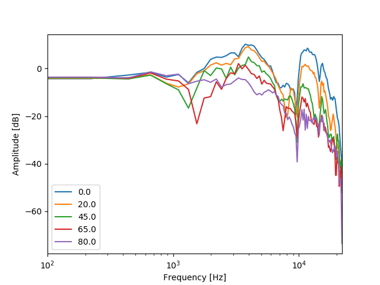
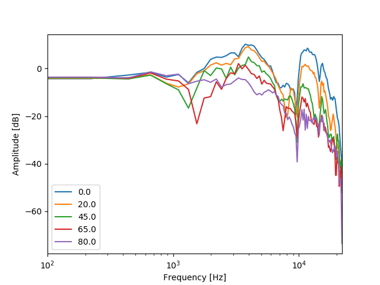
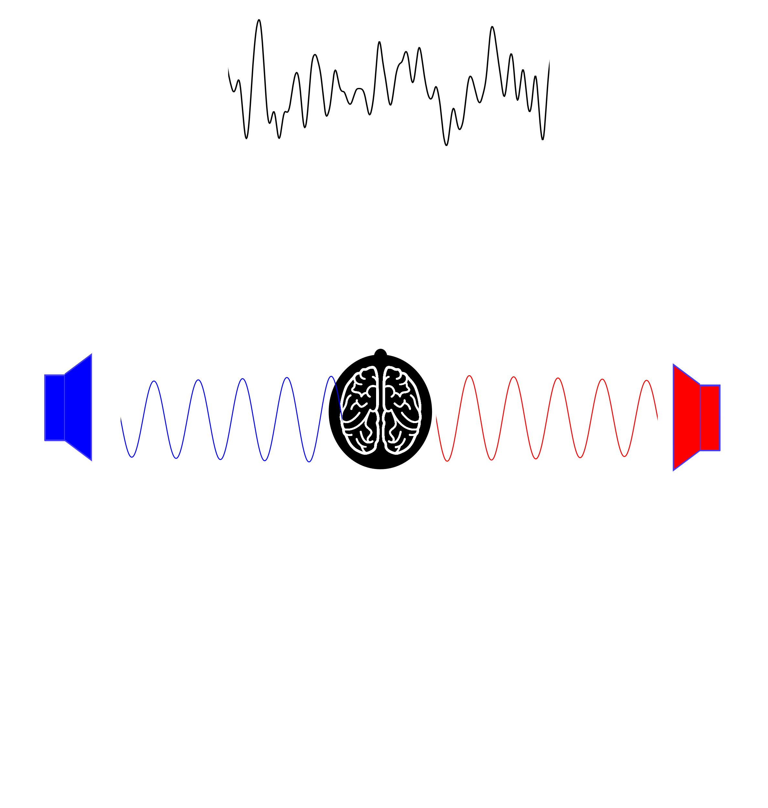
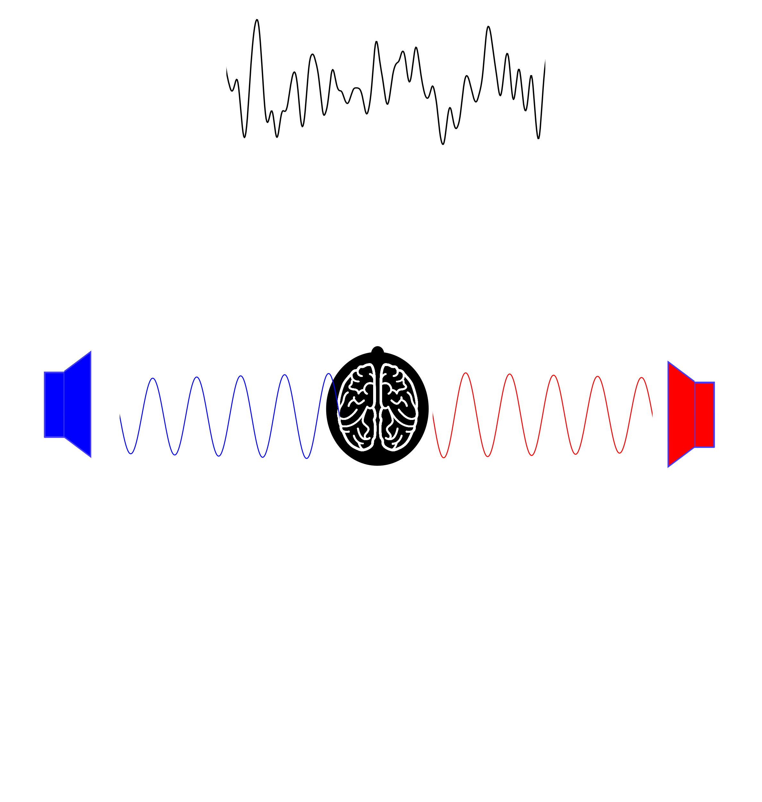
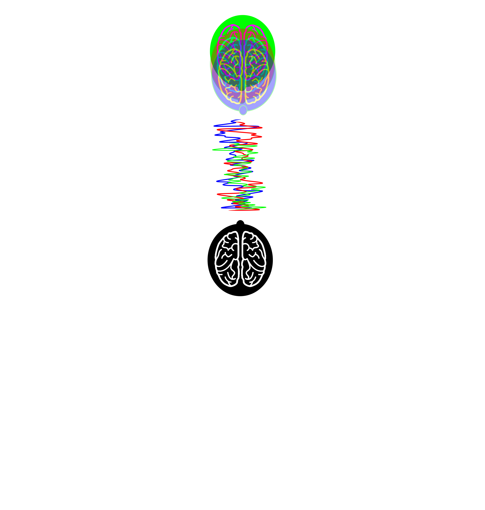
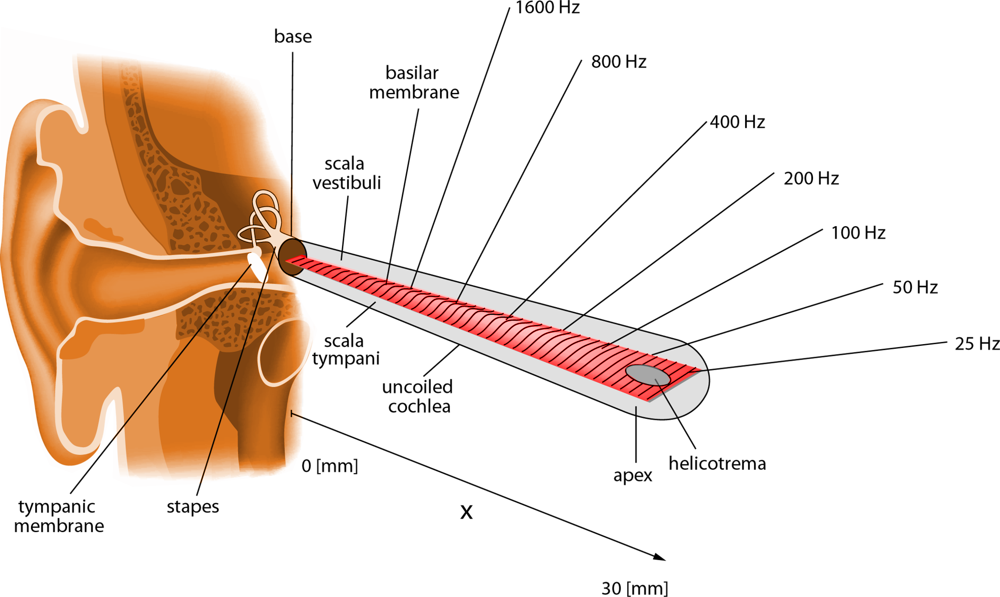
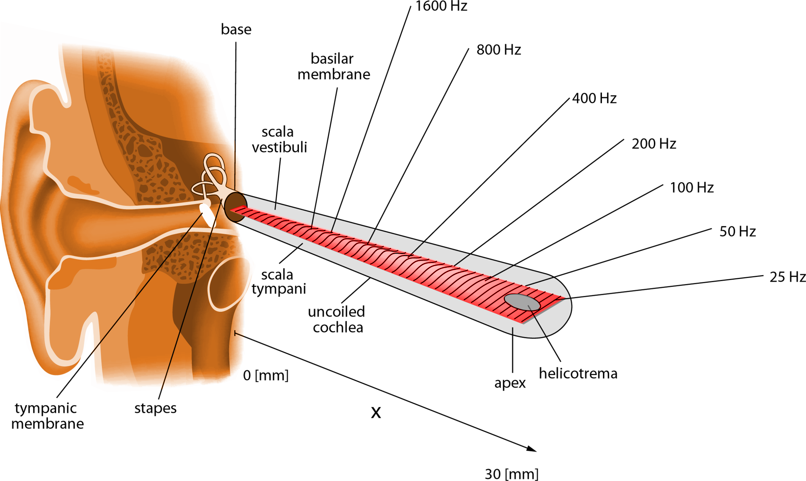

Binaural processing in normal and hearing impaired listeners
Jaime A. Undurraga
2018-07-07
Cocktail-party problem (Cherry 1953)
How do we recognize what one person is saying when others are speaking at the same time?

An critial role of the auditory system is to parse the inputs from the left and right ears into auditory objects - auditory scene analysis. This is an escential role for survival, recognition, and comunication.
- Binaural hearing provide us cues to estimate the relative number and location of sources and objects in the environment.
These cues also help us to estimate the dimensions and characteristics of rooms as well as hear out spearkers in the precense of interfiearing noise.

Grothe et al. (2010)
Harmonicity

What features conveyed by speech sounds?
- Temporal fine structure (TFS)
- Envelope information (ENV)

ITDs and ILDs

ILDs
 

Localization using ITDs


500 Hz tone TFS left-to-right

Modulated 500 Hz tone
with envelope itd (ipd) left-to-right

4000 Hz tone TFS itd (ipd) left-to-rigth

Modulated 4000 Hz tone
with envelope itd left-to-rigth
Localization on the vertical plane


The precedence effect

(Dietz et al. 2013)
Binaural Release from Masking (or Binaural Squelch; or Hirsh effect)
 

 
 
 

Auditory pathway

ILD pathway

(Grothe et al. 2010)
ITD pathway

(Grothe et al. 2010)

The \(\pi\)-limit

- ITD detectors in the mammalian brain restricted to \(\approx\) half a cycle of best frequency.
- Frequency-dependent weighting for centrality
Methods

Stimuli
- 500 Hz bandwidth modulated noise (40.4 Hz) centered at 500 Hz
- Periodics interaural time moulations at 6.7 Hz (ITM-FRs)
 |
Straightness weighting
 |
|
 |

- ANOVA indicated that factor ITD condition was significant (F(4, 35.04) = 7.5, p = 0.0001)
 |
|
|
 |
 |